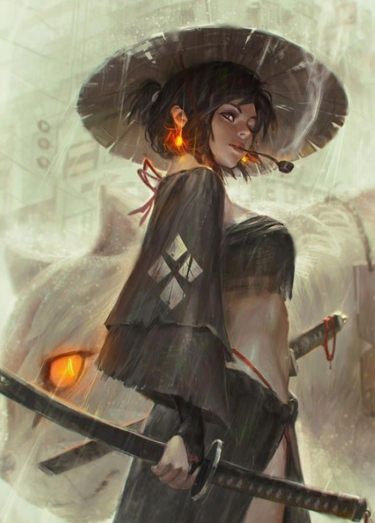

Doğu kökenli bir tür savaşçı.
Onuru her şeyidir. Samurayların vuruşları çok iyidir. Ama dövüşlerden kaçamazlar.
Kaçmalarının tek yolu dövüş sırasında kendilerini REZİL(komut) etmeleridir. Bunu da ancak rakibin seviyesi çok yüksekse veya grup arkadaşlarının toplam seviyeleri samurayın seviyesinin 3katından fazlaysa yapabilirler.
Seviye 1
Hançer: Hançer kullanabilme yeteneğidir.Topuz: Topuz kullanabilme yeteneğidir.
Mızrak: Mızrak kullanabilme yeteneğidir.
Kılıç: Kılıç kullanabilme yeteneğidir.
Karşılama: Kurbanın saldırısını silahla karşılamak için kullanılan yetenek.
(otomatik)Anımsa: Ait olduğunun dinin tapınağına dönüş komutudur. Seviye 10a kadar geçerlidir. (anımsa)
Tılsımlar: Büyü kullanabilme ile ilgili bir yetenektir.(otomatik)
Seviye 2
Tekme: Savaşçıların hedeflerine güçlü bir tekme atma yetenekleri. Düşmana geçikme verir.(tekme)Seviye 3
Hızlı iyileşme: Yaşam puanının daha hızlı yenilenmesini sağlayan yetenek. Bu yetenek yürürken de, dinlenirken de, uyurken de çalışır.(otomatik)Seviye 5
Değnekler: Değnek kullanabilme yeteneğidir.(otomatik)Seviye 6
Parşömen: Parşömen okuma yeteneğidir.(oku yazdıktan sonra okunacak parşömenin adı yazılır.)Seviye 8
Yüksek zarar: Kurbana verilen zararı artırmayı sağlayan yetenek. (otomatik)Seviye 10
Kalkan bloğu: Kurbanın saldırısını kalkanla karşılamak için geliştirilen yetenek. (otomatik) İkili hamle: Dövüşlerde bir turda iki hamle yapabilmek için gerekli yetenek. (otomatik)Seviye 12
Çıplak el: Silahsızken de etkili dövüşebilmeyi sağlayan yetenek. (otomatik)Seviye 15
Sıyrılma: Saldırının vuracağı noktadan ayrılma prensibine dayanan tekniktir.Hem saldıran hem de sıyrılmayı deneyen için çeviklik değeri çok önemlidir.Savaşçılar sıyrılma yeteneğinin ustalarıdırlar.(otomatik)Seviye 16
Meditasyon: Hızlı iyileşmeye benzer. Yöntem olarak uyurken veya dinlenirken zihin yoğunlaşması kullanılır ve büyü gücünün (mana) yenilenmesi sağlanır. (otomatik)Seviye 19
Pazarlık: Alışverişlerde alırken ucuza alma, satarken pahalıya satma yeteneğidir. Bu yetenek kullanılarak dükkan sahibi fiyat konusunda ikna edilmeye çalışılır. Hırsızlar pazarlık konusunda doğuştan yeteneklidirler. (otomatik)Seviye 20
Vahşileşme: Vuruş ve zarar zarlarını yükselten, zırhı ise düşüren bir yetenek. (vahşileş) Çelme: Rakibin bacaklarına hızlı bir vuruş yapılarak onu yere çalmayı amaçlayan yetenek. Başarılı bir çelmenin ardından rakip yere düşer ve 2 tur boyunca kalkamaz. Yere düşen kişinin dövüş becerisi kısmen azalır ve kaçması önlenir. İri cüsseli canlıları yere çalmak kolay olmaz, çevik canlılar ise çelme hamlesini kimi zaman kolayca savuşturabilirler. (çelme) Üçlü hamle: Dövüşlerde bir turda üç hamle yapabilme yeteneği. (otomatik)Seviye 21
Silahsızlandır: Rakibin silahını saldırı esnasında yere düşürme yeteneğidir. (silahsızlandır)Seviye 22
İrfan: Bilgelik vasıtasıyla herhangi bir eşyanın niteliklerini öğrenme yeteneğidir. Tanımlama büyüsüne benzer. (irfanSeviye 23
Kör dövüşü: Karakterin gözleri görmüyorken de dövüşebilmesini sağlayan yetenek. (otomatik)Kurtar: Dövüş sırasında eğer darbelere maruz kalıyorsanız başka bir karakter sizi kurtararak göğsünü siper edebilir. Bu noktada size vuran mobil ya da karakter sizi kurtarana vurmaya başlar.(kurtar
Seviye 24
İkinci silah: İki silahı aynı anda (verimli şekilde) kullanabilmek için geliştirilen yetenek.(otomatik)Seviye 25
Harakiri: Samurayların daha hızlı iyileşebilmek için kendi kanlarını akıtma yeteneğidir. (harakiri)Seviye 26
Kalkan yarma: Dövüş sırasında rakibin kalkanını yarmak için kullanılır. (kalkan yarma)Seviye 28
Kontra: Yapılan saldırıya kontra bir saldırıyla cevap vermek için geliştirilen yetenek. (otomatik)Seviye 29
Silah yarma: Dövüş sırasında rakibin silahını yarma yeteneği. (silah yarma)Seviye 30
Nara: Karakterin nara atarak kendini kutsamasını sağlayan yetenek. Büyüye karşı korumayı ve vuruş zarını arttırır.(nara)Seviye 32
Çapraz blok: Kurbanın saldırısını çapraz blokla karşılayabilmek için gerekli yetenek. (otomatik)Seviye 36
Çivi: Düşmanın ayaklarına çivi atarak çevikliğini azaltma yeteneğidir. (çiviSeviye 37
Fırlatma: Düşmana mızrak fırlatmayı ya da dövüşürken rakibi fırlatmayı sağlayan yetenek.(fırlat)Seviye 40
Hedef: Dövüş sırasında hedef değiştirme yeteneği. (hedefSeviye 42
Kılıç yücelt: Kılıcın özelliklerini yükseltmek için kullanılan yetenek.Seviye 43
Kavrama: Silahın kabzasını sıkıcı kavrayarak, silahsızlandırmayı engelleyen yetenek.(otomatik)Seviye 46
Patlat: Odaya patlayıcı bir madde bırakarak bütün odadakilere zarar veren bir alan saldırısı yapmayı sağlayan yetenek. (patlat)Seviye 55
İkincil hamle: Bir silahla iki vuruş yapabilmeyi sağlayan yetenek. (otomatik)Seviye 61
Kılıç ustalığı: Samurayların yaptıkları katananın dövüştükçe gelişmesini sağlamak için öğrendikleri yetenek.(otomatik)Seviye 62
Kritik vuruş: Kritik vuruşlar yapabilmeyi sağlayan yetenek. (otomatik)Seviye 69
Alan saldırısı: Aynı anda birçok kişiyle dövüşebilmeyi sağlayan yetenek. (otomatik)Seviye 72
Katana: Usta Samuraylar, kendi özel silahlarını yapma yeteneğine sahiptirler.Bunun için demir gereklidir. Katananınızı yaptıktan sonra, Görevci ile görüşerek katana görevini satın almalısınız. Böylece katananız kullanıldıkça gelişecektir. (katana)
Vakizaşi: Vakizaşi yapma yeteneği. (vakizaşi)
Seviye 10
Zırh: Hedef kişiyi korumayı, aldığı darbelerin etkisini azaltmayı amaçlar.(büyü zırh hedef_adı)Hafif tedavi: İyileştirme büyüsü.(büyü 'hafif tedavi' hedef_adı)
Seviye 12
Kutsama: büyüye karşı korumayı ve vuruş zarını arttıran bir koruma büyüsü. (büyü kutsama hedef_adı)Seviye 18
Ciddi tedavi: İyileştirme büyüsü.(büyü 'ciddi tedavi')Seviye 20
Körlük tedavi: Hedefin gözlerindeki körlüğü yoketmeyi amaçlayan büyü. (büyü 'körlük tedavi' hedef_adı)Seviye 24
Saydamlık: Kişiyi kapılardan geçecek şekilde saydamlaştırır.(büyü saydam)Seviye 25
Kritik tedavi: İyileştirme büyüsü.(büyü 'kritik tedavi')Seviye 30
Büyü saptama: Büyülü eşyaları saptamayı sağlayan yetenek.(büyü büyü)Seviye 35
Zehir tedavi: Hedefteki zehri yoketmeyi amaçlayan büyü. Zehir tedavi.(büyü “zehir tedavi” hedef_adı)Seviye 39
Zehir saptama: Zehirli eşyaları saptamayı sağlayan büyü.(büyü 'zehir saptama' eşya_adı)Seviye 60
Yatıştırma: Sürmekte olan bir dövüşü bitirmek için kullanılır.(büyü yatıştırma)